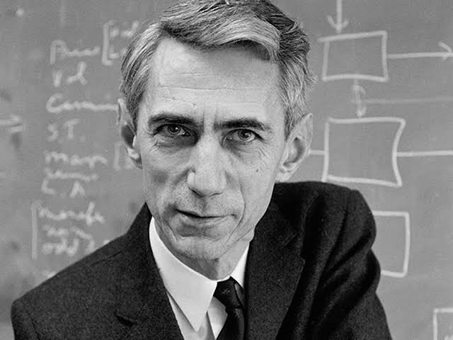

Claude Shannon
Information theory is the mathematical study of the quantification, storage, and communication of information.
The field was originally established by the works of Harry Nyquist and Ralph Hartley, in the 1920s, and Claude
Shannon in the 1940s.: vii The field, in applied mathematics, is at the intersection of probability theory,
statistics, computer science, statistical mechanics, information engineering, and electrical engineering.
A key measure in information theory is entropy. Entropy quantifies the amount of uncertainty involved in
the value of a random variable or the outcome of a random process. For example, identifying the outcome of
a fair coin flip (with two equally likely outcomes) provides less information (lower entropy, less uncertainty)
than specifying the outcome from a roll of a die (with six equally likely outcomes). Some other important measures
in information theory are mutual information, channel capacity, error exponents, and relative entropy. Important
sub-fields of information theory include source coding, algorithmic complexity theory, algorithmic information theory
and information-theoretic security.Applications of fundamental topics of information theory include source coding/data
compression (e.g. for ZIP files), and channel coding/error detection and correction (e.g. for DSL). Its impact has
been crucial to the success of the Voyager missions to deep space, the invention of the compact disc, the feasibility
of mobile phones and the development of the Internet. The theory has also found applications in other areas,
including statistical inference, cryptography, neurobiology perception, linguistics, the evolution and function
of molecular codes (bioinformatics), thermal physics, molecular dynamics, quantum computing, black holes,
information retrieval, intelligence gathering, plagiarism detection, pattern recognition, anomaly detection
and even art creation.